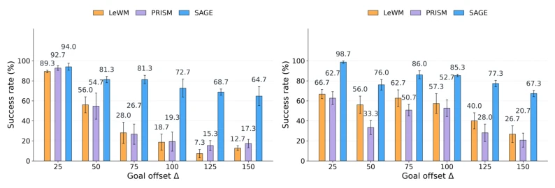
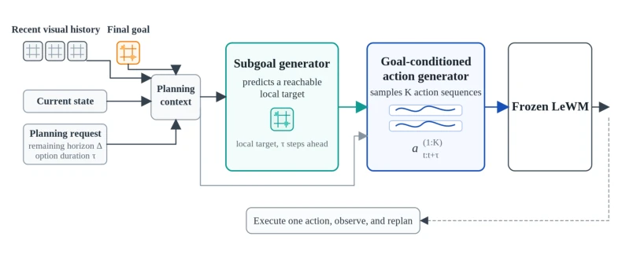
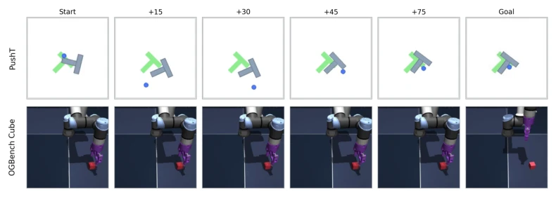

This paper adds a "navigator" to the cold latent world models. The core idea of SAGE is actually not new: breaking long tasks into short runs. But the highlight is that it doesn't guess blindly, but first predicts a "reachable waypoint" (subgoal), and then generates actions based on this waypoint. Compared to baselines that are still randomly casting nets to find actions, this approach indeed brings long-horizon planning back to life. Under extreme testing at H=150, PushT success rate soared from 12.7% to 64.7%, the data is very compelling. However, this method is a bit like "borrowing a chicken to lay an egg", completely relying on LeWM's frozen weights; if the world model itself predicts inaccurately, no matter how hard the subgoal generator works, it is a castle in the air. Additionally, experiments focus mainly on PushT and Cube; these contact manipulation tasks are sensitive to local goals; switching to pure navigation or more complex physical interactions, will the "reachability" assumption of subgoals collapse? In short, it is very stable in engineering, but theoretical generalization still needs a question mark.
研究动机Motivation
潜世界模型（Latent World Models）如 LeWM (Maes et al., 2026) 和 DINO-WM (Zhou et al., 2025) 虽然能通过隐空间预测加速规划，但在长视野任务中面临“提议质量”瓶颈。随着规划 horizon 增长，动作空间呈指数级扩大，固定候选预算下，随机初始化（如 Base CEM）很难覆盖到高质量的未来轨迹。现有工作如 PRISM (Wang et al., 2026) 虽然引入了状态条件提议，但缺乏任务结构引导。SAGE 旨在解决这一矛盾：当目标太远时，直接优化最终目标信号微弱，需要引入可达的中间状态（subgoal）来分解长程任务，平衡局部控制与长程进展，从而让冻结的世界模型能评估到更合理的候选未来。
Latent World Models (Latent World Models) such as LeWM (Maes et al., 2026) and DINO-WM (Zhou et al., 2025) can accelerate planning through latent space prediction, but face a "proposal quality" bottleneck in long-horizon tasks. As planning horizon grows, action space expands exponentially; under fixed candidate budget, random initialization (such as Base CEM) struggles to cover high-quality future trajectories. Existing work such as PRISM (Wang et al., 2026) introduces state-conditioned proposals, but lacks task structure guidance. SAGE aims to resolve this contradiction: when the goal is too far, directly optimizing the final goal signal is weak; reachable intermediate states (subgoals) need to be introduced to decompose long-range tasks, balancing local control and long-range progress, thereby allowing the frozen world model to evaluate more reasonable candidate futures.

Figure 2: Success across goal offsets. Bars show the mean over the three fixed held-out manifests indexed by seeds {32, 42, 52}; error bars show sample standard deviation. All methods share the frozen LeWM checkpoint, 300 initial candidates, and 30 CEM rounds.
The SAGE framework includes two core training components and one frozen evaluator. The overall process is: input current history and distant goal -> subgoal generator predicts local latent state -> action generator generates action options based on subgoal -> frozen LeWM evaluates and CEM optimizes. 1. **Subgoal Generator (Subgoal Generator)**: Uses Transformer Decoder, inputs include history tokens, distant goal, remaining offset, and requested duration τ. It predicts reachable latent states after τ steps, formula is distant goal latent state plus residual term, ensuring output is within LeWM space. Supports multi-scale τ (15, 20, 25 steps), balancing local details and long-range progress. During training, SmoothL1 and cosine loss are used to align LeWM latent states. 2. **Subgoal-Conditioned Action Generator (Action Generator)**: Also based on Transformer, input includes predicted subgoal. It outputs trajectory-level Gaussian Mixture Models (GMM), each Gaussian represents an action option. Activates queries of corresponding length through duration mask, ensuring actions match subgoal duration. During training, optimizes trajectory mixture negative log-likelihood. 3. **Evaluation and Optimization**: Action options generated by the generator initialize CEM population, frozen LeWM calculates cost based on distance between predicted future latent states and subgoal, filters elite set and fits Gaussian distribution for iterative optimization, finally executes first segment of actions.

Figure 1: The planning stage in SAGE. The subgoal generator converts the current history, a far- goal latent, and a requested duration τ into a local target. Then the action generator proposes τ-step action options conditioned on that target. Frozen LeWM predicts and ranks their latent futures, while CEM refines the best proposal region before execution.
Tested on PushT and OGBench Cube, using frozen LeWM weights. Baselines include Base CEM, PRISM, Generator-only, etc. Metric is success rate. Main results: At H=150, PushT success rate improved from 12.7% to 64.7%, Cube from 26.7% to 67.3%. Ablation studies show: generating subgoals only (Generator-only) already significantly improves performance; action generator further constrains candidate distribution; LeWM-guided CEM refinement is crucial for long-horizon (SAGE prior top at H=150 only 16%). Time scheduling study: Finer-grained planning stages (e.g., 15 steps vs 25 steps) and order affect final performance, proving quality of intermediate states is key. Experiments used 3 fixed seeds (32, 42, 52) held-out manifests for verification, ensuring results are robust.

Figure 3: Representative successful held-out rollouts at H=75. Each row shows the online obser- vation at the start, after 15, 30, 45, and 75 environment steps, followed by the query goal. The intermediate frames come from the planner’s own closed-loop rollout; they do not come from the offline demonstration.